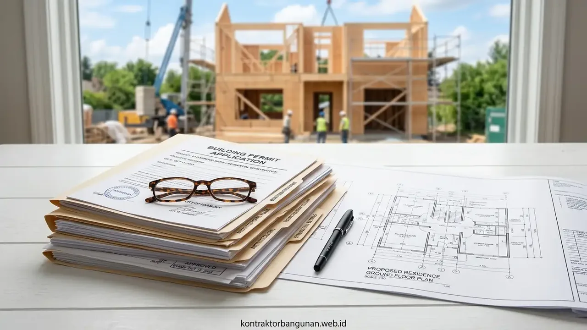

Mengapa PBG dan SLF Sangat Krusial untuk Legalitas Bangunan Anda?
PBG dan SLF adalah syarat mutlak legalitas untuk menghindari penyegelan satpol PP, jaminan asuransi properti, serta syarat operasional izin usaha (NIB/OSS).
Persetujuan Bangunan Gedung (PBG) wajib dimiliki sebelum proses fisik konstruksi dimulai. Sementara itu, Sertifikat Laik Fungsi (SLF) merupakan sertifikat yang diterbitkan pemerintah daerah setelah bangunan selesai dibangun dan diuji keandalannya secara berkala (5 tahun untuk bangunan umum, 20 tahun untuk rumah tinggal tunggal).
Berdasarkan laporan kepatuhan tata ruang PUPR 2025/2026, lebih dari 45% sengketa komersial dan penolakan klaim asuransi kebakaran gedung disebabkan oleh ketiadaan sertifikat kelaikan fungsi yang masih aktif. Tanpa PBG dan SLF yang sah:
- Bangunan berisiko terkena surat peringatan hingga pembongkaran paksa oleh instansi pengawas tata ruang.
- Usaha di dalam gedung tidak dapat memperpanjang izin operasional komersial pada sistem OSS RBA.
- Nilai aset properti saat hendak diagunkan ke perbankan atau dijual akan terkoreksi secara signifikan.
Bagaimana Alur Konsultasi PBG dan SLF Gratis via WhatsApp?
Alur konsultasi berlangsung praktis melalui pengiriman data dasar proyek via WA, review awal tim ahli teknis, hingga rekomendasi langkah penyelesaian.
Kami merancang jalur komunikasi cepat agar Anda tidak perlu membuang waktu datang ke kantor dinas hanya untuk menanyakan persyaratan dasar:
- Langkah 1 - Mulai Chat WhatsApp: Hubungi nomor layanan perizinan kami di 0889-8964-3555 dan sampaikan kebutuhan Anda (apakah pengurusan PBG baru, renovasi, atau perpanjangan SLF gedung).
- Langkah 2 - Kirim Data Dasar Bangunan: Kirimkan informasi ringkas seperti lokasi kota/kabupaten proyek, luas tanah & bangunan, fungsi gedung (hunian, ruko, gudang, kantor), serta berkas KRK/sertifikat (jika sudah ada).
- Langkah 3 - Screening Dokumen Teknis: Tim arsitek dan tenaga ahli struktur kami meninjau zonasi tata ruang (Koefisien Dasar Bangunan / KDB, KLB, GSB) dan kelayakan gambar eksisting Anda.
- Langkah 4 - Solusi & Estimasi Durasi: Anda menerima laporan hasil analisa awal berupa daftar berkas yang perlu dilengkapi beserta skema bantuan penyusunan gambar kerja DED berlisensi jika diperlukan.

Verifikasi berkas teknis arsitektur, struktur, dan utilitas proteksi kebakaran untuk pemenuhan sidang TPA SIMBG.
Tabel Komparasi Metode Pengurusan PBG dan SLF
Tabel komparasi menguraikan perbedaan antara Pengurusan Mandiri Pemohon, Biro Jasa Tanpa Tenaga Ahli, dan Pendampingan Resmi Kontraktor Bangunan.
| Parameter Evaluasi | Pengurusan Mandiri Pemohon | Biro Jasa Non-Teknis | Pendampingan Kontraktor Bangunan |
|---|---|---|---|
| Kesiapan Gambar DED & Kajian | Harus Cari Arsitek Luar | Sering Pakai Gambar Asal-asalan | Lengkap In-House Bersertifikat STRA |
| Perhitungan Struktur Tahan Gempa | Wajib Sewa Ahli Struktur Luar | Tidak Ada / Rawan Ditolak SIMBG | Laporan Analisa SAP2000/ETABS SNI |
| Pendampingan Sidang TPA/TPT | Menghadapi Sidang Sendiri | Tidak Menguasai Jawaban Teknis | Didampingi Tenaga Ahli Berlisensi |
| Transparansi Biaya Retribusi | Transparan (Setor Kas Daerah) | Rawan Biaya Tambahan Siluman | 100% Transparan Sesuai SKRD Resmi |
| Risiko Penolakan Berkas | Tinggi Akibat Ketidaklengkapan | Sangat Tinggi | Sangat Rendah (Pra-Audit Internal) |
| Layanan Konsultasi Awal | Mengantre di Kantor Dinas | Dikenakan Tarif di Awal | 100% Gratis via WhatsApp |
- Patuhi Garis Sempadan Bangunan (GSB): Pastikan jarak dinding terluar bangunan terhadap batas jalan mematuhi aturan KRK daerah setempat agar tidak terkena penolakan otomatis dari dinas tata kota.
- Sertakan Rencana Proteksi Kebakaran Aktif & Pasif: Untuk bangunan komersial, ruko bertingkat, dan gudang, lampirkan skema hidran, APAR, pintu darurat, dan smoke detector yang telah divalidasi.
- Lengkapi Kajian Aksesibilitas Difabel: Gedung pelayanan publik dan fasilitas komersial wajib menyediakan ramp kursi roda, toilet ramah disabilitas, dan jalur evakuasi yang jelas.
Pertanyaan yang Sering Diajukan (FAQ)
Kesimpulan Praktis
Legalitas bangunan adalah perlindungan investasi properti dan jaminan kelancaran operasional bisnis jangka panjang Anda. Tuntaskan pengurusan izin PBG dan SLF gedung Anda dengan mudah melalui pendampingan tim ahli kami.